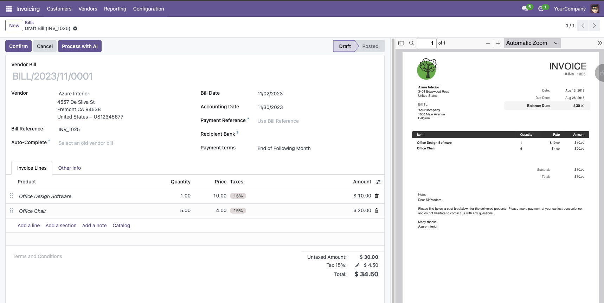

Technical dependency of Argentina Invoice OCR. Install that app for a complete, configurable workflow on Odoo 16 Community.
Bridges a configured OCR and extraction provider to OCA Invoice Import. The output is a draft that must be reviewed before posting.
The main addon requires a company administrator to opt in before the invoice and extraction data are sent to a configured endpoint. No provider is installed or activated by this dependency.

Based on Apexive's Invoice Import LLM, with modifications by Serfe.